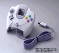
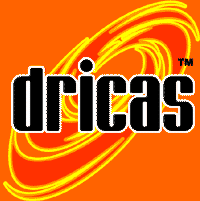
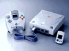
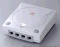

Date de sortie : 27 Novembre
98
Alors que tout le monde
annoncait sega au bord du goufre, la firme japonaise prend une nouvelle
fois ses concurents de vitesse en sortant la Dreamcast, son dernbier
bebe de 128 bits.L'apparition d'une nouvelle console apporte toujours son
lot de question.Va t-elle tenir ses promesses?Combien coutera t-elle?va
t-elle faire la différence?Les éditeurs vont-ils suivre?.Avec
ce dossier spécial dreamcst nous espérons répondre
à toutes vos question sur la "bête" si vous avez des questions
n'hésitez pas envoyez les nous et nous tenterons d'y répondre
le plus rapidement possible.
HISTOIRE
Il y a plus d'un
an que les rumeurs ont commencé à circuler sur une nouvelle
console développée en secret dans les laboratoires de recherche
de Sega.On a parle tour à tour de Dural, de Black-belt, puis de
katana, avant de découvrir que la prochaine console s'appelerait
la "Dreamcast".Cela s'explique par le fait que pour succéder à
la saturn, sega travaillait simultanément sur deux systèmes
aux performances et au cout equivalents.Tandis que Sega usa s'était
vu confier la tache de développer une machine basée sur le
chip graphque Voodoo de 3dfx interactive (la black belt), Sega japon développait
de son côté un autre système utilisant le célèbre
Power VR2 de nec/videologic(La dural).
Finalement c'est le système
japonais qui fut choisi.On le rebaptisa Katana, puis dreamcast.Malheureusement
sega avait conclu un contrat avec 3dfx interactive pour la création
d'un processeur graphique exclusif à sa machine.3dfx avait terminé
la conception de ce chip une semaine vant la date limite fixée et
avait même fourni à sega un processeur conforme à son
cahier de charges.Mais sega ayant donné sa préférence
à la technologie nec, le contrat qui liait sega à 3dfx fut
annulé, et ce dernier a donc intenté un procès contre
legéant du jeu vidéo.
La présentation
officielle de la console s'est déroulée le 21 mai 98 à
tokyo, sous l'égide de M.Irimajiri, président de sega entreprises
ltd.Contraction des mots dream et broadcast, la Dreamcast dispose d'un
potentiel encore jamis vu dans le monde du jeu vidéo.Le logo en
forme de spirale rouge symbolise d'ailleurs l'univbers et la puissance
infinie des être humains, ce qui en dit long sur les aspirations
de sega pour sa console. Lors du show, la dreamcast démontra une
partie de ses capacités par une animation en temps réel de
la tête de m.Irimajiri, utilisant les nombreuses fonctions du chip
graphique en matière de mapping, de gestion des éclairages,
de transparence...Bill gates était aussi de la partie par l'intermédiaire
d'une bande vidéo, dévoilant ce qu'il pensit de la machine,
il expliqua que le système d'exploitation de la dreamcast, basé
sur une verson de windows CE, autoriserait ds conversions de jeux plus
faciles du monde de laconsole à celui du pc,et il conclut en disant
que la console allait créer un nouveau standart dans le domaine
du jeu vidéo.
Caractéristiques
techniques:
LE PROCESSEUR:
Le SH-4 Hitachi:un processeur
aux capacités étonnantes:Ce processeur d'architecture RISC
fournit d'exellentes performances pour un cout relativement faible.Il se
caractérise par l'incorporation d'un FPU (floating point unit)qui
lui permet de calculer en virgule flottante.Ce qui permet tout simplement
d'effectuer des calculs 3D de manière beaucoup plus précise.La
playstation par exemple, dispose d'un processeur central qui ne calcule
pas la virgule ce qui se caractérise à l'écran par
de petit écart ntre les polygones.et même si ce n'est pas
trop genant, on ne peut pas dire que l'effet soit des plus agréables.Comme
la N64, grace à ce FPUla dreamcast affichera donc des polygones
aux jointures parfaites.En théorie, le SH-4 est d'ailleurs capable
de calculer(pas d'afficher)quelques 5 millions de polygones par seconde.Il
n'existe actuellement pas de processeur dans le monde du pc qui puisse
se rapprocher de la puissance du SH-4 en matière de calcul 3d.Le
proccesseur travaille à différentes fréquences selon
les opérations effectuées(de 16 à 128 bits)Si l'on
se base sur la classification standart des processeurs le SH-4 est en réalité
un 64 bits, mais cela n'est finalement pas si important, dans la mesure
ou la puissance de la console n'est pas le fait unique du processeur centrtal
mais de la combinaison de tous les éléments de la machine
ce qui fait dans ce cas ci de la dreamcast une 128 bits.
LE SON:
La partie sonore de la
dreamcast est prise en charge par le yamaha AICA, un chipset qui dispose
de son propre CPU RISC et de 2mb de RAM il s'agit certainement du meilleur
processeur sonore jamais inclus dans une console de jeux.Le chipset se
compose d'un ARM7(32bits RISC)qui gère 64 voix en 16 bits à
48khz(qualité supérieure au cd)sans affecter la vitesse d'affichage,
ainsi que d'un DSP(digital sound processor)capable d'appliquer en temps
réel divers effets de modulation(delay,reverb,son surround,ect).La
puce permet également la compression ADPCM (4:1)en hard, ce qui
signifie qu'il sera possible de stocker plus de sons en mémoire
sans perte de qualité, et ce sans nécessiter le recours au
CPU lors de la décompression, les 2mb de RAM, quant à eux,
devraient permettre une meilleure qualité audio sans utiliser la
mémoire principale (sauf si c'est nécessaire).On peut donc
s'attendre à quelque chose d'encore inégalé dans le
domaine du jeu vidéo.
MEMOIRE :
Avec une mémoire
totale de 26 mo la console n'aura aucun mal à tourner!
La mémoire vive
se divise en fait en 3 catégories:la RAM principale (16 mo,peu pour
un pc c'est largement suffisant pour une console),la RAM du chip graphique
(8mo)et la RAM du chip sonore (2mo).La mémoire principale est ce
qu'on appelle une mémoire unifiée.Cela signifie qu'elle peut
être utilisée par tous les processeurs du système.L'avantage
de cette architecture est que la gestion des données mémorisées
est faciliyée pour les programmeurs, dans la mesure où ils
n'ont pas à se préoccuper de les déplacer d'une partie
de la mémoire à une autre.La dreamcast utilise quand même
16mo de SDRAM, ce qui représente 8fois plus que la playstation et
4fois plus que la N64.Avec une telle capacité de stockage, la console
pourra afficher des images plus complexes que sur 32 bits, avec beaucoup
plus de polygones, des textures plus riches plus nombreuses, ainsi que
des bruitages de meilleure qualité. La console pourra ainsi rivaliser
avec les meilleures bornes d'arcades du moment!
Le power VR2 intègre
lui aussi sa propre mémoire (8mo)qui sert à l'affichage et
au stockage des textures.Plus la résolution est élevée
et plus la mémoire requise est importante.Pour afficher une image
de 640*480 pixel en 16 bits(32000 couleurs)la console utilise 640*480 *2
(à cause du double buffer)=1 228 800 Bytes (1.2mo).La même
image en 24 bits requerra donc 640*480 *3(3*8bits)*2=1 843 200 Bytes.De
la même manière, une texture de grande taille (256*256 pixels)nécessitera
plus de mémoire qu'une de 32*32 pixels.Le proccesseur graphique
ARM7 dispose également de 2mb de RAM, dans laquelle vont se loger
les différents échantillons utilisés pour les bruitages,
ou de couts thèmes musicaux.C'est 4 fois plus que ce qu'on peut
trouver sur une playstation ou une saturn.Et si cela ne suffisait pas,
la mémoire principale peut être utilisée en complément,
aussi bien par l'ARM7 que par le power vr2, en raison de son architecture
unifiée.

MODEM :
Avec la saturn, sega avait
déja essayé de faire une incursion dans le monde de la communication
en proposant, en option, un modem pour les marchés japonais et américains.Fidèle
à son appelation de dreamcast, la console se veut à la fois
machine de jeu et support de communication.Il était donc normal
que la console bénéficie d'un modem permettant les parties
en réseau, laccès à internet ou le téléchargement
d'add-ons pour les jeux. Mais contrairement à la saturn, le modem
sera intégré à la console. Plus besoin donc de se
le procurer en option.On sait encore peu de choses dessus , hormis le fait
que ce sera un modèle répondant au standart V34(36.6kb/s)et
qu'il pourra être boosté de manière logicielle afin
de pouvoir utiliser les futures connexion par cable.Sega semble en tout
cas décidé à mettre en place un système appelé
dricas(dreamcast raccourci)sur lequel pourront avoir lieu des parties en
réseau, comme c'est déja le cas sur internet pour nous les
possesseurs d'un pc.D'autres services tels qu'un journal virtuel
(daily dc news)ou un e-mail devraient même être accessibles.
Malheureusement dans le contexte actuel, il y a de fortes chances pour
que ce fameux modem ne soit jamais disponible en europe.

RESOLUTION :
Une résolution
minimum de 640 x 480, c'est la totale. Sur PC c'est la plus basse résolution,
mais c'est surtout votre télé qui va pas en revenir!La console
disposera dun cable(en option) permettant de brancher la dreamcast sur
l'écran de votre pc
3D :
Sur PC la technologie
POWER VR est déjà existante, mais confronté à
3DFX elle n'a pas fait le poids. Sega à choisi POWER VR, certainement
pour une raison de nationalité. La Dreamcast calcul 3 000 000 de
polygones secondes. Soyons clair, elle calcule 3 millions de triangles
par secondes (un triangle est un polygone). On parle toujours en disant
que la Model 3, ne calculait que 1 Million de polygones par secondes, mais
elle se sont des carrés (un carré est aussi un polygones).

Et que pour faire un carré
il faut 2 triangles, donc on divise le calcul 3D de la Dreamcast pour la
comparer à la Model 3. Ce qui nous fait 1,5 Millions de polygones
soit 500 000 de plus.

EFFETS :
Bump-mapping
Effet appliqué
sur n'importe quelle texture pour lui donner du relief
Fog
Effet de brouillard (Voir
Turok)
Mip-mapping
Changement automatique
de texture et résolution suivant la taille et la distance de l'objet
Tri-linear filtering
Génère
un flous quand on se rapproche dans objet pour éviter de pixelliser
(Mario 64)
Anti-aliasing
Très proche du
précédent sauf qu'il ne fonctionne pas avec le
Mip-mapping, et empêche
l’effet d'escalier
Environment mapping
Gestion des reflets,
des ombres et des éclairages sur en environnement 3D
Specular effect
Gestion spécifique
de la lumière sur une surface en temps réel. Elle donne de
l'opacité ou de la transparence à un texture
Super sampling
Exclusif à la
Dreamcast permet des calculer l'image en réduction. (Exemple affichage
sur votre téléviseur de 25% de l'image, en temps réel.
Une sorte de changement de résolution)
Le pad:
Le paddle de la dreamcast
ressemble à un croisement entre le pad de la n64 et celui de la
playstation.Il possède en effet un stick analogique, une croix directionelle
numérique, 4 boutons d'action et 2 gachettes sur les cotés.L'originalité
du pad provient des 2 emplacement dans lesquels viennent s'enficher deux
VMS et de l'orifice réservé à l'écran à
cristaux liquides.Malheureusement, le pad ne possède pas de moteur,
ce qui aurait permis au pad de vibrer, c'est dommage!On peut cependant
penser que sega commercialisera ultérieurement un VMS vibrant comme
nintendo l'a fait avec son pack vibrations.Quoi qu'il en soit, d'autres
accessoires sortiront rapidement sur la machine et on peut espérer
le meilleur de la technologie actuelle, avec par exemple des périphériques
à retour de force comme on en trouve en arcade.Avec ses 4 ports
manettes, les parties à plusieurs devraient d'ailleurs vite faire
oublier ce petit défaut.
LE VMS
C'est un petit appareil
électronique qui ressemble à un tamagotchi, mais dont le
principe est révolutionnaire.Il s'agit à l'origine d'une
carte mémoire disposant d'un petit écran à cristaux
liquides que l'on connecte à un pad de la dreamcast, comme une vulgaire
cartouche de sauvegarde.Mais l'appareil propose bien plus que cela.Grace
à son écran LCD, il permet d'entrer des données en
toute discrétion lors des parties multijoueurs, il peut servir de
radar, dans les jeux d'action, ou à lister votre inventaire dans
un rpg.Mais ce n'est pas tout car l VMS peut aussi s'utiliser sans le pad.Avec
sa croix directionnelle et ses 2 boutons, il fait alors office de petit
jeu électronique dont les données pourront être ensuite
reintroduites dans la dreamcast et utilisées dans un autre jeu.La
connection de deux VMS est également possible pour par exemple échanger
des informations ou pour s'affronter à la manière des derniers
tamagotchis.On espère que sega et les fguturs développeurs
exploiteront au mieux les capacités de ce petit accessoire bien
sympathique.
LES PERIPHERIQUES:
Le VMS:sortie
le 27 novembre,il coutera environ 800fb (150ff)
Le paddle:sortie
le 27 novembre, il coutera environ 1500fb(250ff)
Le volant:sortie
le 27 novembre, il coutera environ 3000fb(500ff)En raison de sa base, le
volant de la dreamcast doit impérativement se poser sur une table.Il
possède 4 boutons d'ation et deux pédales analogiques.
Le joystick arcade:sorite
le 27 novembre,prix environ 2500fb(350ff)Véritable bénédiction
pour les accros de bornes d'arcades, cet énorme joystick nanti de
6 gros boutons verts devrait apporter plus de précision pour les
jeux de plateforme ou de combat.Les bourrins devraient y trouver leur compte.
Le micro:date
et prix n'ont pas encoe étés annoncés, cet accesoire
devrait etre utilisé comme moyen de reconnaissance vocale dans certains
jeux.Onpeut aussi penser qu'il pourrait être utilisé pour
communiquer avec vos adversaires lors des parties en réseau.
Le clavier:sortie
le 27 novembre,prix 1500fb(250ff)ce périphérique servira
certainement à surfer sur le web, à envoyer des e-mails,
ou tout simplement à taper du texte de manière plus simple
qu'avec un pad.
L'adaptateur VGA:date
de sortie courant 99 prix non convenu, Ce convertisseur RGB permettra de
brancher la dreamcast sur l'écran du pc, autorisant ainsi une résolution
graphique plus élevée que sur une tv normale.
AVANTAGES
1 par rapport à
la playstation:
-3 000 000 polygones
contre 360 000 sur play.
- jontures parfaites
entre les polygones.
-2 systèmes d'exploitation
(sega et windows CE)
-Capacité du CD-ROM
de 1GB contre 650mb sur playstation.
-Temps de chargements
raccourcis.
-Meilleure qualité
sonore
-4 ports manettes.
-Modem intégré.
-Conversion facile des
jeux d'arcades de model 2,3,NAOMI et PC.
La technologie 32bits
qui équipe la playstation ne peut bien éviedemment pas rivaliser
avec une 128 bits bénéficiant de composants électroniques
dernier cri en matière de son et de 3d.
2 par rapport à
la N64:
-3 000 000 polygones
contres 100 000 pour la N64.
-Pas d'effets de brouillard
pour masquer le cliping.
-Des jeux moins chers.
-Deux systèmes
d'exploitation.
-Programmation simplifiée.
-Capacité du CD-ROM
de 1GB contre 32MB max sur N64.
-Meilleure qualité
sonore.
-modem intégré.
-Conversion plus facile
des jeux d'arcade.
-Probablement beaucoup
plus de jeux disponibles.
-Même si la machine
de nintendo utilise un technologie 64 bits silicon graphics de pointe,elle
est un peu juste au niveau du nombhre de polygones qu'elle peut manipuler.Le
support cartouche et la mémoire limitent également la puissance
de la console.On a en quelque sorte affaire à un moteur de ferrari
dans une 2CV.
3 par rapport à
un PC
-Le SH-4 est envron 4
fois plus puissant qu'unpentium 2 en matière de calcul de virgules
flottantes.
-Le prix est bien moins
élevé.
-L'encombrement minimal
-Pas de plantages intempestifs
de la machine.
-La dreamcast est optimisée
pour le jeu.
-système d'exploitation
dédié principalement au jeu.
-4 ports manettes.
-simplicité d'utilisation.
-Deux systèmes
d'exploitation.
-Conversion facile des
jeux d'arcade.
-Dans l mesure ou les
PC sont devenus de véritables machines de jeux grace à la
montée en puissance des cpu et à l'apparition des dernières
cartes accélératrices spécialisées dans l'affichage
3d, on peut à juste titre effectuer une comparaison avec la dremcast.Malgré
une puissance non négligeable, le prix élevé d'une
bonne config PC et la complexité d'utilisation comparé à
une dreamcast,l'emcombrement de ces machines ne leur permet pas d'être
un véritable concurrent pour la Dreamcast.
La Dreamcast n'a donc
à l'heure actuelle aucun concurrent potentiel.Il faudra en effet
attendre la prochaine vague de consoles(la playstation 2 ou le retour de
nintendo)pour trouver une alternative viable à la machine de Sega.Quoi
qu'il en soit Sega a frappé un grand coup en s'alliant avec les
plus grands fournisseurs de composants électroniques.Nul doute que
la concurrence aura fort à faire avant de parvenir à déstabiliser
le géant de l'arcade.Et vu la qualité de la machine on peu
déja affirmer qu'il s'git pour l'instant de la meilleure console
du marché.
NAOMI
L'arme secrète de Sega!
En plus de l'avance technoligique de la copnsole
sur ses concurentes, l'autre atout de la dreamcast peut se résumer
en un seul mot:NAOMI, NAOMI est le nom de la prochaine génération
de bornes d'arcades qui va remplacer l'actuel model 3, réputé
pour ses VF3,Sega rally 2....Naomi est également un prénom
japonais synonyme de beauté et représente aussi les initiales
de New Arcade Operation Machine Idea.Le rapport entre la dreamcast et la
naomi est tout simple,les 2 machines sont basées sur le même
processeur central(le SH-4 de hitachi), le même processeur graphique(Le
power VR2)et le même processeur sonore.En clair il s'agit donc d'une
dreamcast version arcade dont la principale différence réside
dans la taille de la mémoire principale et de la RAM graphique qui
se voit doublée pour offrir des performances optimles(32 MB pour
la RAM principale et 16Mb pour le power vr).La NAOMI est un exellent investissement
pour sega, dans la mesure où elle offre des performances supérieures
au model 3(près de 30%, d'après les premiers tests effectués
par sega)pour un prix bien moin élevé.Les conversions de
jeux NAOMI sur dreamcast étant ainsi simplifiées à
l'extreme, la console devrait rapidement bénéficier de nombreux
titres de qualité.Outres sega,une vingtaine de développeurs
auraient d'ailleurs déja conclu un accord avec sega pour la réalisation
de jeux sur NAOMI.Ce chiffre est énorme si on considère que
la plupart des développeurs d'arcade travaillent sur leur propre
hardware.On murmure même que Capcom pourrait remplacer sa carte CPS-III
2d par la NAOMI.D'après les premières annonces,de nombreux
genres devraient être représentés sur NAOMI.On retrouvera
les habituels jeux de course,de baston, de sport, les shoot them up et
les titre utilisant des pistolets.
Retour
en haut de la page
|